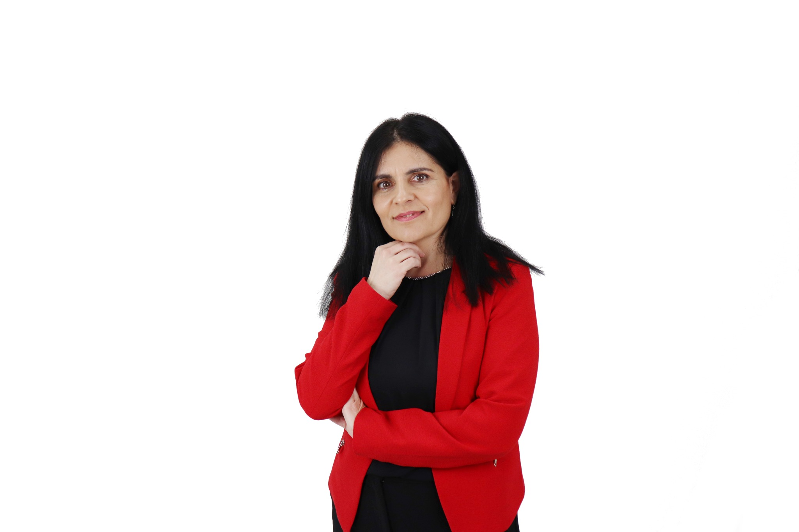

Investigación
Producción científica centrada en tecnología educativa, educación superior online, IA, chatbots, abandono y experiencia del estudiante.
Explorar Research →Investigación · Tecnología educativa · Innovación
Investigadora en tecnología educativa y Directora de Tecnología
Investigo cómo la tecnología, los datos y la inteligencia artificial pueden transformar la educación superior y mejorar la experiencia de aprendizaje.

Perfil
Soy Licenciada en Pedagogía por la Universidad de Salamanca y Doctora Cum Laude en Educación por la Universidad Internacional de La Rioja. Mi trabajo se sitúa en la intersección entre pedagogía, tecnología e innovación educativa.
Actualmente soy Directora de Tecnología en el Instituto Europeo de Posgrado y en la Red de universidades Summa. También formo parte del grupo de investigación Sinergia Digital, donde participo en proyectos orientados a mejorar la educación mediante soluciones digitales.
Producción científica centrada en tecnología educativa, educación superior online, IA, chatbots, abandono y experiencia del estudiante.
Explorar Research →Diseño y desarrollo de proyectos educativos, LMS y ecosistemas tecnológicos orientados a una experiencia de aprendizaje de calidad.
Divulgación, publicaciones y reflexión sobre nuevas metodologías y el impacto de la transformación digital en la enseñanza.
Explorar Insights →